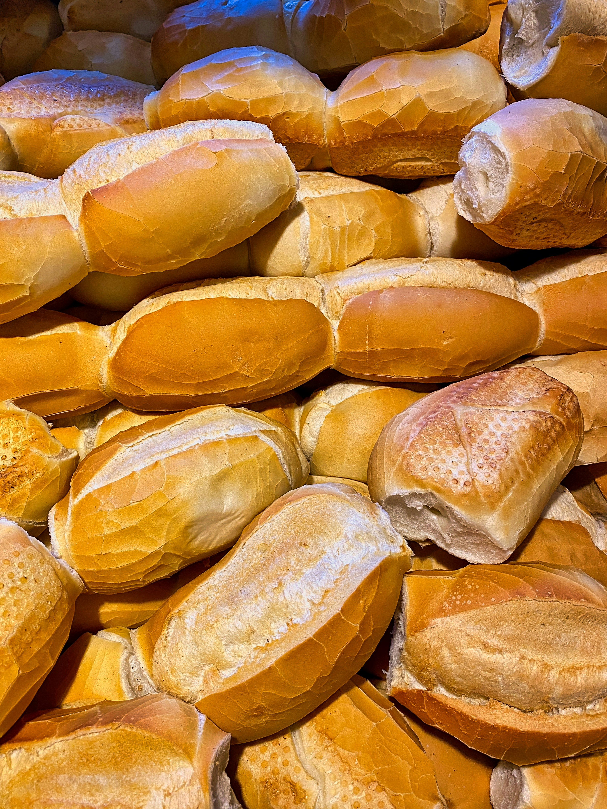

클린 식단 다이어트: 인슐린 민감도를 높여 건강하게 살 빼기
인슐린은 다이어트에서 너무나도 중요한 키메이커입니다.
흔히 보디빌딩 선수들이 사용하는 약물 중에 '인슐린'이라는 것을 들어보셨을 겁니다.
물론 일반인들이 사용하는 것이 금지된 약물입니다만, ㅎㅎ '인슐린'은 어떤 역할을 하기에 운동하는 사람들이 관심을 가지는 것일까요?
'인슐린'은 양분의 활용과 매우 밀접한 관련이 있습니다.
다이어트를 할 때 칼로리보다 중요한 것이 바로 '인슐린 민감도'입니다.
인슐린은 우리 몸에서 혈당을 조절하는 호르몬인데, 이 인슐린이 제대로 작동해야 우리 몸은 에너지를 효율적으로 사용할 수 있습니다.
인슐린 민감도가 높으면?
- 근육 성장 촉진: 근육 세포에 탄수화물을 효과적으로 전달하여 글리코겐 합성을 촉진하고 운동 능력을 향상시킵니다.
- 체지방 감소: 잉여 에너지가 체지방으로 축적되는 것을 막아줍니다.
인슐린 민감도가 낮으면?
- 근육 성장 저하: 근육에 에너지 공급이 원활하지 않아 운동 능력이 떨어집니다.
- 체지방 증가: 남는 에너지가 지방으로 저장되어 살이 찌기 쉬운 체질이 됩니다.

인슐린 저항성을 부르는 식습관, 이제 그만!
설탕, 빵, 인스턴트 식품처럼 혈당을 급격히 높이는 음식을 자주 먹으면 인슐린이 과도하게 분비됩니다.
이런 상태가 지속되면 우리 몸은 인슐린에 둔감해져 인슐린 저항성이 생기고, 결국 체지방 증가로 이어집니다.
클린 식단으로 인슐린 민감도를 높이자!

"체지방이 쌓이는 하향의 경향성과 체지방이 감소하는 상향의 경향성 사이의
'변곡점'이 바로 클린식단을 통한 인슐린 민감도 증가 Turning Point입니다."
주식을 해보신 분들은 아실겁니다. 주식에는 계속적으로 아래로 내려가는 ‘경향성’이 있으면,
잠깐의 상승에도 결국은 하한의 경향성을 따라게 되어 있습니다. 이것이 인슐린 민감도가 낮은 상태인 체지방이 쌓이고 있는 내 몸의 상태라고 볼 수 있죠.
그러나, 인슐린 민감도를 증가시키는 ‘Turning Point’ 즉, 변곡점을 만든다고 한다면, 주식으로 보면 상향으로 선회하는 경향으로 나타나게 됩니다.
즉, 체지방을 분해하는 메커니즘인 것이죠.

이 변곡점을 위해서는 일정 기간 동안의 클린 식단을 이용한 개선 기간이 필요합니다.
클린 식단은 정제된 탄수화물, 가공식품, 설탕 등을 제한하고, 복합 탄수화물, 단백질, 건강한 지방을 균형 있게 섭취하는 식단입니다.
클린 식단을 꾸준히 실천하면 인슐린 민감도를 높여 건강한 다이어트를 할 수 있겠죠.
대략적으로 체지방 감소의 변곡점을 위해서는 완전 클린 식단으로 2주 정도는 진행해야 한다고 봅니다.
개인차마다 약간의 차이는 있겠지만, 적어도 2주 정도의 기간 후에는 인슐린 민감도가 증가하는 경향성으로 나의 체기능이 변화하고 있다고 말할 수 있겠죠?
클린 식단의 효과
- 체지방 감소: 인슐린 민감도를 높여 체지방이 효과적으로 분해되도록 돕습니다.
- 운동 능력 향상: 근육에 충분한 에너지를 공급하여 운동 효과를 높입니다. 주당운동강도의 증가는 결국, 더 빠른 근육량의 증가로 귀결될 수 있겠죠.
- 건강 개선: 혈당 조절, 에너지 대사 개선 등 전반적인 건강 증진에 도움이 됩니다.
그럼 다음 시간에는 효과적으로 다이어트를 위한 클린 식단 짜는 방법에 대해 자세히 알아보겠습니다.
다음 내용